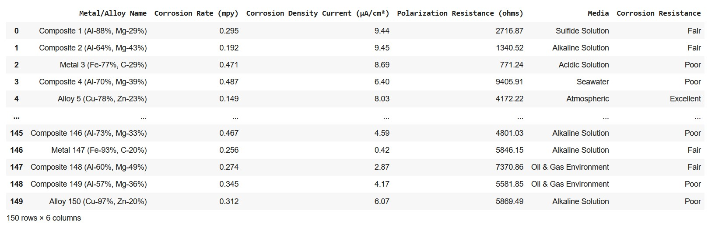

April, 2024
This tutorial serves as a follow-up to the previous one on binary logistic regression, wherein I provided a comprehensive explanation of the coding steps involved in predicting binary outcomes for corrosion properties of materials.
Now, the question is: How do we apply the logistic regression method if there are more than two categories?
Here comes the role of ordinal logistic regression. The word ‘ordinal’ means sequence or order. Hence, ordinal regression is a type of logistic regression used for modeling and predicting ordinal variables, where the categories have a natural order in a meaningful way. For instance, the Likert scale, or customer satisfaction surveys - the response variable in all of these falls into ordered categories.
In this tutorial, we'll explore how to apply ordinal regression in coding to predict material properties with more than two categories. By the end, you'll gain the skills to model and interpret such data for your own projects effectively. Let's get started!
Data is the precursor to building efficient models in machine learning. Hence, amassing sufficient and necessary data is the very first step. I have used a hypothetically generated dataset on the corrosion properties of 150 metals and alloys.
There are four independent variables (Xs) namely corrosion rate, corrosion current density, polarization resistance, and media.The target variable (y) is corrosion property categorized as 'poor', 'fair', and excellent.
import numpy as np
import matplotlib.pyplot as plt
import pandas as pd
from sklearn.preprocessing import OrdinalEncoder
from sklearn.model_selection import train_test_split
# Performance metrics
from sklearn.metrics import confusion_matrix, accuracy_score
from sklearn.metrics import mean_absolute_error, mean_squared_error #Loading data
data = pd.read_csv('SyntheticCorrData2.csv', encoding='latin')
# Create a DataFrame
df = pd.DataFrame(data)Here is a glimpse of the data loaded for machine learning.

X = df[['Corrosion Rate (mpy)', 'Corrosion Density Current (µA/cm²)', 'Polarization Resistance (ohms)']]
y = df['Corrosion Resistance']ordinal_encoder = OrdinalEncoder(categories=[["Poor", "Fair", "Excellent"]])
y_encoded = ordinal_encoder.fit_transform(y.values.reshape(-1, 1)).ravel()The y_encoded variable is the result of applying fit_transform() to the target variable y after reshaping it to a 2-dimensional array with one column using y.values.reshape(-1, 1). This transformation changes the orientation of the array from horizontal to vertical.
ravel( ): Flattens 2D array into a 1D array. This flattened array is then used as the encoded target variable for training the machine learning model.
To recheck the categories after encoding, simply type:
categories = ordinal_encoder.categories_To view the encoded values of 'y', type:
y_encodedThe corresponding output:
array([1., 1., 0., 0., 2., 1., 1., 1., 0., 2., 2., 1., 2., 1., 0., 0., 1.,
1., 1., 0., 2., 1., 0., 1., 0., 1., 1., 0., 0., 0., 2., 1., 1., 0.,
2., 0., 1., 2., 0., 0., 0., 1., 1., 1., 0., 2., 1., 2., 2., 1., 1.,
1., 0., 0., 2., 2., 0., 1., 2., 1., 1., 0., 2., 0., 1., 1., 1., 2.,
0., 2., 2., 0., 2., 2., 1., 2., 0., 2., 1., 1., 0., 1., 2., 0., 0.,
0., 2., 2., 1., 1., 1., 0., 2., 0., 1., 0., 2., 1., 0., 2., 2., 0.,
0., 2., 1., 1., 0., 2., 2., 2., 1., 0., 2., 0., 1., 2., 2., 2., 0.,
0., 1., 0., 1., 0., 2., 1., 2., 2., 1., 2., 2., 1., 0., 2., 2., 0.,
0., 1., 1., 0., 2., 0., 0., 2., 2., 0., 1., 1., 0., 0.])To view the labels mapped to their corresponding encoded numbers:
df_y_encoded= pd.DataFrame(y_encoded) y_names=ordinal_encoder.inverse_transform(y_encoded.reshape(-1,1))
df_y_names =pd.DataFrame(y_names) map_data = [df_y_names, df_y_encoded]
result = pd.concat(map_data, axis=1)
resultX_train, X_test, y_train, y_test = train_test_split(X, y_encoded, test_size=0.2, random_state=42)
pip install mord
from mord import OrdinalRidgeMORD is a Python package that implements ordinal regression methods. The package includes different models suitable for ordinal regression tasks, and it categorizes them into threshold-based, regression-based, and classification-based models. We will implement the OrdinalRidge regression-based model for predicting an ordinal variable, meaning that the variable has a clear ordering or ranking.
The mathematics behind ordinal ridge regression involves a regularization technique applied to the standard linear regression model to handle multicollinearity, prevent overfitting, and enhance prediction accuracy, especially when dealing with ordinal data.
ord_reg = OrdinalRidge()
ord_reg.fit(X_train, y_train)y_pred =ord_reg.predict(X_test)#Computing accuracy, mean absolute error
accuracy = accuracy_score(y_test, y_pred)
mae = mean_absolute_error(y_test, y_pred)cm = confusion_matrix(y_test, y_pred)
print(cm) [[ 6 3 0]
[ 0 10 0]
[ 0 5 6]]import seaborn as sns
sns.heatmap(cm/np.sum(cm), annot=True,fmt='.2%', cmap='GnBu')Finally, here is the link to the entire code and dataset.